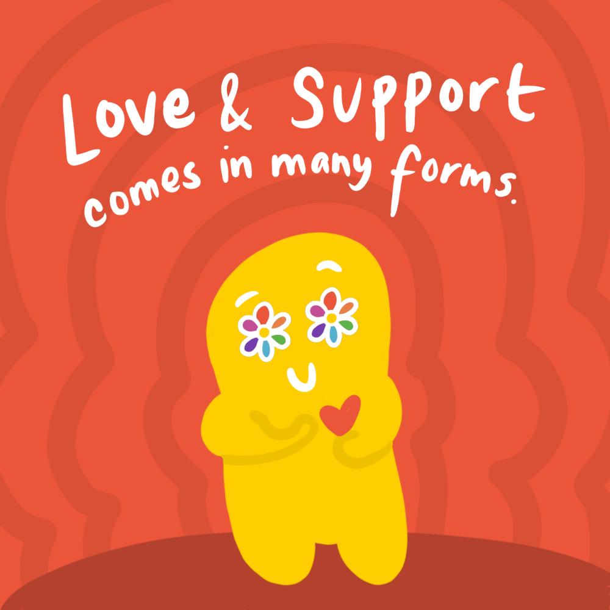
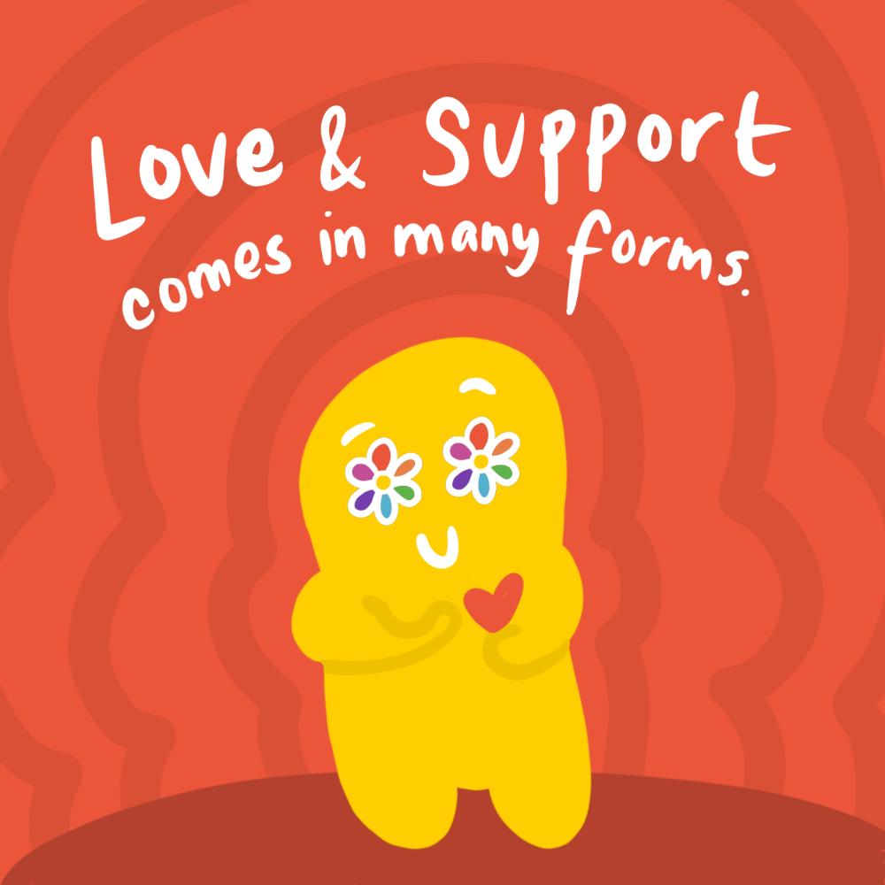

The COVID-19 pandemic has affected the whole world in different, shocking ways. As I conquered the year 2020 inside my humble abode, I encountered mental health issues that took a toll in my daily life. This inspired me to build habits that centered on practicing self-love. The thoughts and emotions that lived in my mind rent free were expressed through art. I was able to start a collection of artwork that featured SUNNY, a recurring character that I started to implement on my creations during the pandemic. SUNNY is a mobile application prototype focused on the importance of one’s self-love and mental health. The application features SUNNY, a character inspired from the optimism and support that I have gotten from my loved ones during the pandemic. The character SUNNY acts as the bridge between the user and content, depicting a persona that would create a casual and genuine connection with the user. With the intentions of paying back the help I’ve received from people throughout the pandemic, I created this prototype to create awareness focused on the importance of mental health and the power that lies in knowing that there’s a community behind your back.
Marc Velayo was born in Mandaluyong, Philippines in 1997. He immigrated to Santa Clara, California in 2012. He's currently pursuing his Bachelors of Fine Arts in Art, Concentration in Digital Media at San Jose State University. Marc's work features various mediums centering around the importance of mental health and social justice. He creates illustrations and is experienced in the field of graphic design. Marc has competed in several competitions such as the Adobe Creative Jam and BRIDGEGOOD's Inspire Oakland 2020 Digital Media Competition.
HOME
The COVID-19 pandemic has affected the whole world in different, shocking ways. As I conquered the year 2020 inside my humble abode, I encountered mental health issues that took a toll in my daily life. This inspired me to build habits that centered on practicing self-love. The thoughts and emotions that lived in my mind rent free were expressed through art. I was able to start a collection of artwork that featured SUNNY, a recurring character that I started to implement on my creations during the pandemic. SUNNY, the recurring character in my work during the pandemic is inspired from the support that I received from my loved ones. The character features colorful flowers as its set of eyes. The flower represents my growth as a person that bloomed through the unconditional love and support that was shown to me when I was going through my personal struggles and problems. SUNNY is a mobile application prototype focused on the importance of one’s self-love and mental health. The application features SUNNY, a character inspired from the optimism and support that I have gotten from my loved ones during the pandemic. The character SUNNY acts as the bridge between the user and content, depicting a persona that would create a casual and genuine connection with the user. With the intentions of paying back the help I’ve received from people throughout the pandemic, I created this prototype to create awareness focused on the importance of mental health and the power that lies in knowing that there’s a community behind your back.
The application prototype for SUNNY was created using Figma. The branding materials and graphics were created using Adobe Illustrator and Procreate.
 

SUNNY is a mobile application prototype focused on the importance of one’s self-love and mental health. The application features SUNNY, a character inspired from the optimism and support that I have gotten from my loved ones during the pandemic. The project’s tagline is "Make your day brighter", which places an emphasis on the importance of allocating time and effort on one's self everyday. The project also serves as an awareness tool to motivate the younger demographics in practicing self-love. This prototype also introduces the act of building habits and various activities that can be beneficial in an individual’s self growth. The prototype features five activities that promotes relaxation, creativity and healthy living. SUNNY’s activities include Createe (This activity focuses on creating art, music and DIY projects. The user can also view other people's choice of activity), Move (This activity focuses on the importance of exercise. It features a list of parks and trails nearby to the user. The places listed features the park's location, # of miles from the user’s location and community ratings. It also features workout guides with SUNNY as the coach.), Rest (This activity features sleeping & meditation guides. The user can also connect to SUNNY’s Spotify playlist.), Gain (This activity promotes good news and learning materials (i.e. Ted Talk videos) that can uplift one’s mood and can help promote optimism.) and Express (A daily journal activity featuring a public and private feed for users to share their thoughts.). The prototype also features various sections in helping the user navigate within the application. These sections are Surprise Me (A random activity generator that the user can use if there are any difficulties in choosing an activity), My Rocks (The user’s goals for the week), My Progress (An activity log which showcases the # of interactions and name of activity that the user completed), Today’s Self Care (a feature that showcases different self care tips or suggestions for the user), Help (Various resources and guides for professional help or community resources) and Settings (Section for editing the user's profile, privacy settings etc.). The whole prototype was created using Figma, while the graphics were created using Adobe Illustrator and Procreate.